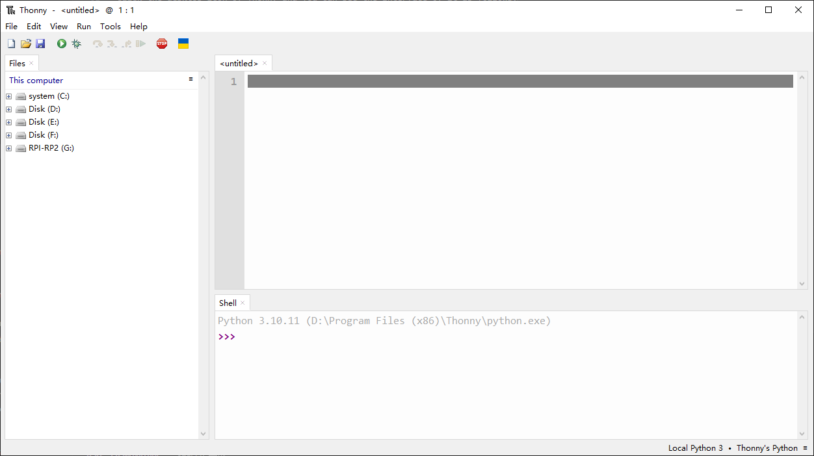
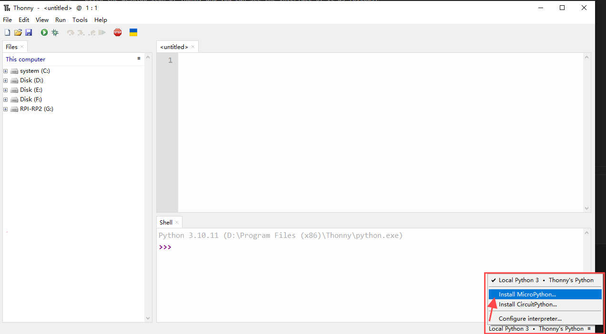
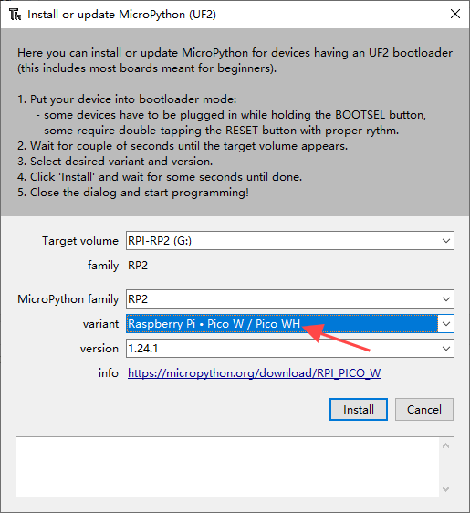
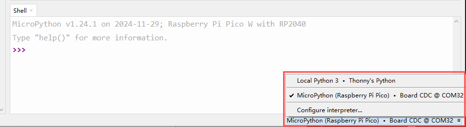
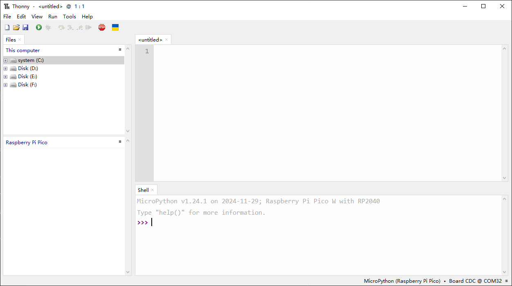
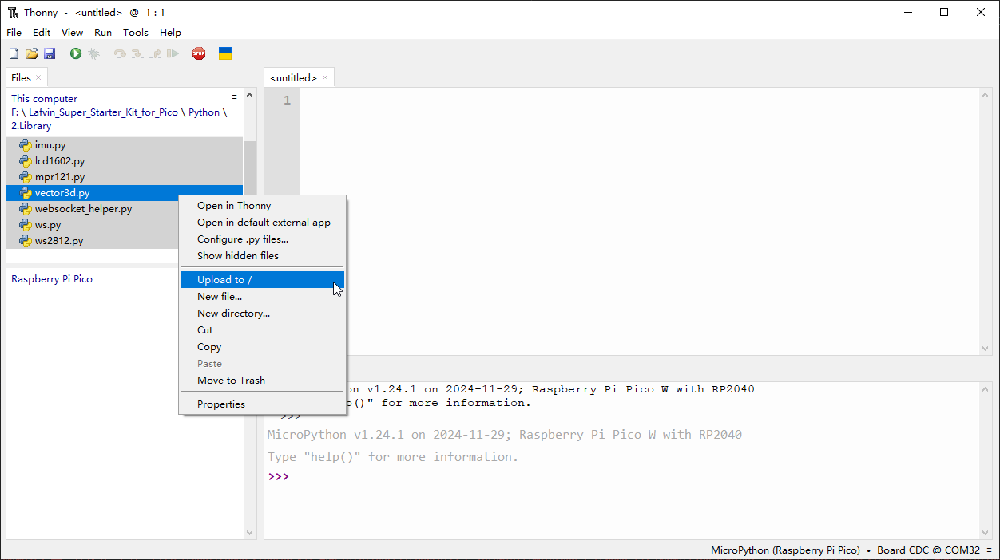
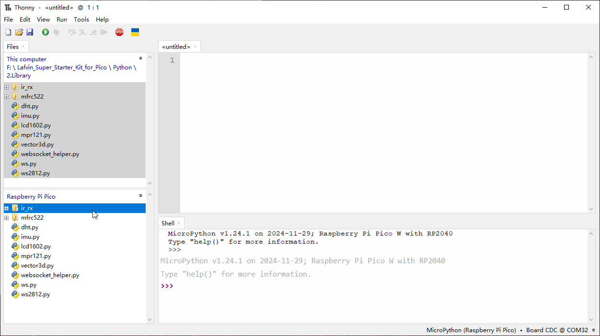

Python Language Preparation
1.Download the Thonny
Before you can start to program Pico with MicroPython, you need an integrated development environment (IDE), here we recommend Thonny. Thonny comes with Python 3.7 built in, just one simple installer is needed and you’re ready to learn programming.
Visit Download Thonny page.
Download the IDE for your OS version.

Note
You can also open “Super_Starter_Kit_for_Pico/Python/Software”, we have prepared it in advance.
Installation
Windows
The icon of Thonny after downloading is as below. Double click “thonny-4.1.6.exe”.
If you’re not familiar with computer software installation, you can simply keep clicking “Next” until the installation completes.


If you want to change Thonny’s installation path, you can click “Browse” to modify it. After selecting installation path, click “OK”. If you do not want to change it, just click “Next”.

Check “Create desktop icon” and then it will generate a shortcut on your desktop to facilitate you to open Thonny later.

Click “install” to install the software.


If you’ve check “Create desktop icon” during the installation process, you can see the below icon on your desktop.

Basic Configuration of Thonny
Click the desktop icon of Thonny and you can see the interface of it as follows:

Select “View” >> “Files” and “Shell”.


2.Install Micropython Firmware to your Pico(Important)
我们现在将MicroPython安装到Raspberry Pi Pico中,Thonny IDE为我们提供了一键安装的方式
我们先打开Thonny IDE
我们按住Pico的BOOTSEL按钮,然后使用Micro USB连接Pico和电脑,当电脑弹出一个名为RPI-RP2的设备的时候, 释放BOOTSEL按钮
在IDE右下角,选择Install MicroPython

4. 点击之后会出现一个窗口,在Target卷中，您刚刚插入的Pico卷将自动出现，在Micropython变体 中，选择Raspberry Pi。Pico W/Pico WH,然后版本选择1.24.1,点击安装,等待安装结束

此时你的Pico已经准备就绪了!
3.Testing codes (Important)
确保Pico已经安装MicroPython并通过数据线连接到计算机。打开Thonny,点击右下角,确保里面有 MicroPython (Raspberry Pi Pico),其中的COM对于不同的系统可能不同
After configuration, every time you open Thonny, it will communicate with Pico. The interface is shown below. 配置完成之后,每次打开Thonny,它会与Pico通信
Enter print('hello world') in “Shell” and press Enter.
上传库文件到Pico
In some projects, you will need additional libraries. So here we upload these libraries to Raspberry Pi Pico W first, and then we can run the code directly later. 在某些项目中，您将需要额外的库。因此，我们首先将这些库上传到Raspberry Pi Pico W，然后我们可以直接运行代码。
1.打开thony IDE，用微型USB电缆将Pico插入计算机，然后单击右下角的“MicroPython (Raspberry Pi Pico).COMXX”
2.将ide切换到项目文件夹LAFVIN_Super_Starter_Kit_For_Pico/Library内的所有文件上传到/,上传需要一点时间
3.现在你将看到你刚刚上传的库在你的pico中
Open and Run Code
1.项目中的code部分会告诉你使用了哪段代码，所以可以在对应路径找到代码文件如果你双击它，一 个新的窗口会在右边打开。你可以同时打开多个代码。
2.选择对应要运行脚本，单击“运行当前脚本”按钮或按F5。
如果代码中包含需要打印的信息，它就会出现在Shell中；否则，只会显示以下信息。
MicroPython vx.xx on xxxx-xx-xx; Raspberry Pi Pico W With RP2040
Type "help()" for more information.
>>> %Run -c $EDITOR_CONTENT
3.要停止正在运行的代码，请单击“停止/重新启动后端”按钮。%RUN -c $EDITOR_CONTENT命令在停止后将消失。
4.我们可以使用ide上面的save按钮或Ctrl+S或来保存对当前文件的修改
以及使用file -> Save as来将代码保存为单独的文件
选择树莓派Pico
输入文件名和扩展名.py后，单击OK。你将在树莓派pico上看到保存的文件
Note
Regardless of what name you give your code, it’s best to describe what type of code it is, and not give it a meaningless name like abc.py. When you save the code as main.py, it will run automatically when the power is turned on.